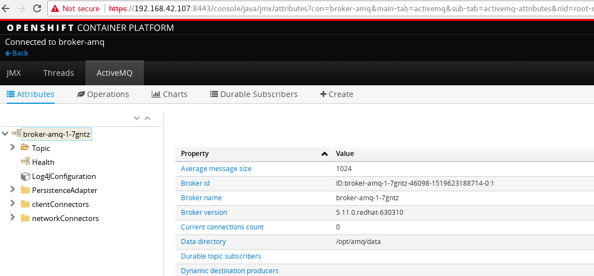

$ cd mock-maximo/
$ mvn clean package
$ java -jar target/mock-maximo-1.0.jarFuse IBM Maximo SAP Integration Example
This example will demonstrate how use JBoss Fuse Integrate IBM Maximo and SAP.
Introduction
TODO--
Mock Service
Run Local
Once started finish, use the http://localhost:8080/maximo/oslc/os/mxpo?lean=1&_lid=id&_lpwd=pass will get the following response json
{"member":[{"href":"http://localhost:8080/maximo/oslc/os/mxpo/rp3iU3546m5S6Y9bGJGwI"},{"href":"http://localhost:8080/maximo/oslc/os/mxpo/Q6tXdwb4cgDRCfwzyBAGg"},{"href":"http://localhost:8080/maximo/oslc/os/mxpo/fgfNyxzyHGhryzUbEJ1uY"},{"href":"http://localhost:8080/maximo/oslc/os/mxpo/4XUWJcgdJscpe1TBSoOB0"},{"href":"http://localhost:8080/maximo/oslc/os/mxpo/NO0T3MB8gC1AwChEwpz3x"},{"href":"http://localhost:8080/maximo/oslc/os/mxpo/DqEjXAPwtErImCu3yo1TX"},{"href":"http://localhost:8080/maximo/oslc/os/mxpo/7jQfgib3POV8yAmvQM3BR"},{"href":"http://localhost:8080/maximo/oslc/os/mxpo/dPfc3IzW7LSvhYr6qkFpc"},{"href":"http://localhost:8080/maximo/oslc/os/mxpo/lCrUxsLRUJo3s2QIfIJ9h"},{"href":"http://localhost:8080/maximo/oslc/os/mxpo/UWVMqgsUGCfkuSUbBPAYJ"}]}Try any of the href will extract another mopo json.
Run on OpenShift
$ oc login https://192.168.42.107:8443 -u developer -p developer
$ oc project mock
$ cd mock-maximo/
$ mvn clean fabric8:deployOnce started finish, use the http://maximo-mock.192.168.42.107.nip.io/maximo/oslc/os/mxpo?lean=1&_lid=id&_lpwd=pass will get the following response json
{"member":[{"href":"http:http://maximo-mock.192.168.42.107.nip.io/maximo/oslc/os/mxpo/rp3iU3546m5S6Y9bGJGwI"},{"href":"http:http://maximo-mock.192.168.42.107.nip.io/maximo/oslc/os/mxpo/Q6tXdwb4cgDRCfwzyBAGg"},{"href":"http:http://maximo-mock.192.168.42.107.nip.io/maximo/oslc/os/mxpo/fgfNyxzyHGhryzUbEJ1uY"},{"href":"http:http://maximo-mock.192.168.42.107.nip.io/maximo/oslc/os/mxpo/4XUWJcgdJscpe1TBSoOB0"},{"href":"http:http://maximo-mock.192.168.42.107.nip.io/maximo/oslc/os/mxpo/NO0T3MB8gC1AwChEwpz3x"},{"href":"http:http://maximo-mock.192.168.42.107.nip.io/maximo/oslc/os/mxpo/DqEjXAPwtErImCu3yo1TX"},{"href":"http:http://maximo-mock.192.168.42.107.nip.io/maximo/oslc/os/mxpo/7jQfgib3POV8yAmvQM3BR"},{"href":"http:http://maximo-mock.192.168.42.107.nip.io/maximo/oslc/os/mxpo/dPfc3IzW7LSvhYr6qkFpc"},{"href":"http:http://maximo-mock.192.168.42.107.nip.io/maximo/oslc/os/mxpo/lCrUxsLRUJo3s2QIfIJ9h"},{"href":"http:http://maximo-mock.192.168.42.107.nip.io/maximo/oslc/os/mxpo/UWVMqgsUGCfkuSUbBPAYJ"}]}Try any of the href will extract another mopo json.
ActiveMQ
Using amq63-basic.json to setup ActiveMQ
$ oc new-project fis
$ oc create -f files/amq63-basic.json
$ oc new-app --template=amq63-basic --param=MQ_USERNAME=admin --param=MQ_PASSWORD=adminOnce the deployment finished, the AMQ welcome page looks:

Mysql
Using tables-mariadb.sql to setup mysql
$ oc new-app --docker-image=registry.access.redhat.com/rhscl/mysql-57-rhel7:latest --name=mysql -e MYSQL_USER=test_user -e MYSQL_PASSWORD=test_pass -e MYSQL_DATABASE=test -e MYSQL_ROOT_PASSWORD=redhat
$ oc get pods | grep mysql
mysql-1-rpg39 1/1 Running 0 9m
$ oc port-forward mysql-1-rpg39 3306:3306
$ mysql -h127.0.0.1 -utest_user -ptest_pass test < files/tables-mariadb.sql
$ mysql -h127.0.0.1 -utest_user -ptest_pass test -e "SELECT * FROM TAXSMAPPING"integration-hub
Deploy on OpenShift
$ mvn clean fabric8:deploytarget-queue
Deploy on OpenShift
$ mvn clean fabric8:deploy3Scale
Execute below command to create a new project
oc new-project amp --display-name="API Management Platform" --description="API Management Platform"-
Click Add to Project, copy the content of 'amp.yml' which can be find from https://raw.githubusercontent.com/3scale/3scale-amp-openshift-templates/2.1.0-GA/amp/amp.yml
-
Click continue to process, add parameter WILDCARD_DOMAIN with value
3scale-admin.3scale-admin.192.168.42.107.nip.io -
Find the login user/password via:
Overview→system-app→Environment, the USER_LOGIN is the login username, and the USER_PASSWORD is the login password, eg,admin/qo8hu0ks. -
Login to 3Scale via
https://3scale-admin.3scale-admin.192.168.42.107.nip.io, the above user/password should be used.
Karaf standalone mode
JBoss Fuse
JBoss Fuse 6.3 Install
$ unzip jboss-fuse-karaf-6.3.0.redhat-262.zip && cd jboss-fuse-6.3.0.redhat-262Edit etc/users.properties, comment out
admin=admin,admin,manager,viewer,Monitor, Operator, Maintainer, Deployer, Auditor, Administrator, SuperUserStart JBoss Fuse
./bin/startMariadb
Install & Start
yum groupinstall mariadb mariadb-client -y
systemctl start mariadbPrepare Database
# mysql -u test_user -p
Enter password:
MariaDB [(none)]> use test;
MariaDB [test]> source ~/fuse-sap-example/hub/src/main/resources/sql/tables-mariadb.sqlInstall Feature
./bin/client
features:install camel-sql
features:install camel-jackson
features:install camel-http
features:install camel-jsonpath
features:install camel-jetty
features:install camel-xmljsonDeploy
cd fuse-sap-example
mvn clean install
cp mysql-connector-java-5.1.44.jar jboss-fuse-6.3.0.redhat-262/deploy
cp integration-hub-1.0-SNAPSHOT.jar jboss-fuse-6.3.0.redhat-262/deploy
cp xom-1.2.5.jar jboss-fuse-6.3.0.redhat-262/deploy
cp target-queue-1.0-SNAPSHOT.jar jboss-fuse-6.3.0.redhat-262/deploy